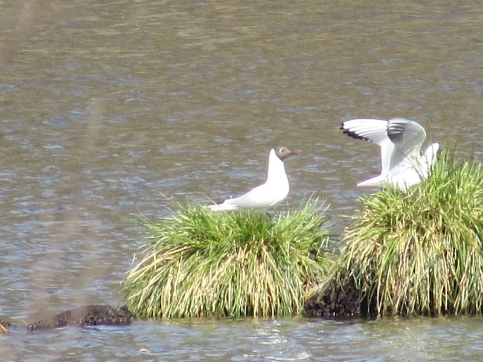

Lachmöwe
Chroicocephalus ridibundus
Alljährlich im zeitigen Frühling erscheinen Lachmöwenschwärme im Ried. Sie brüten auf Inseln der großen Stichseen im Naturschutzgebiet. Umherschweifende Trupps besuchen dann regelmäßig auch die Gewässer des Riedlehrpfades und des Lengenweiler Sees.